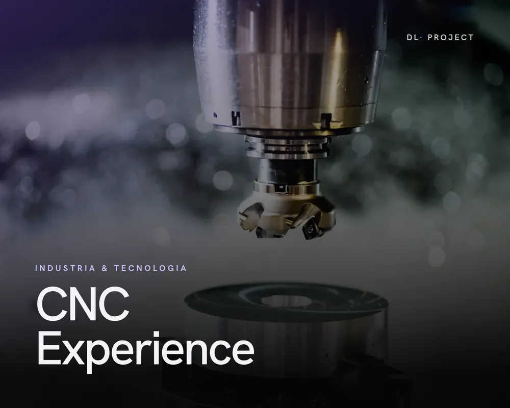
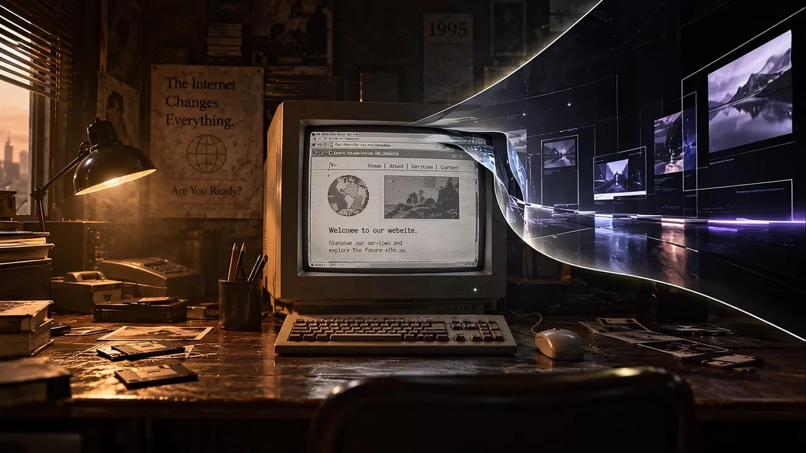
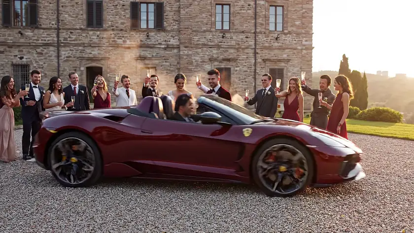
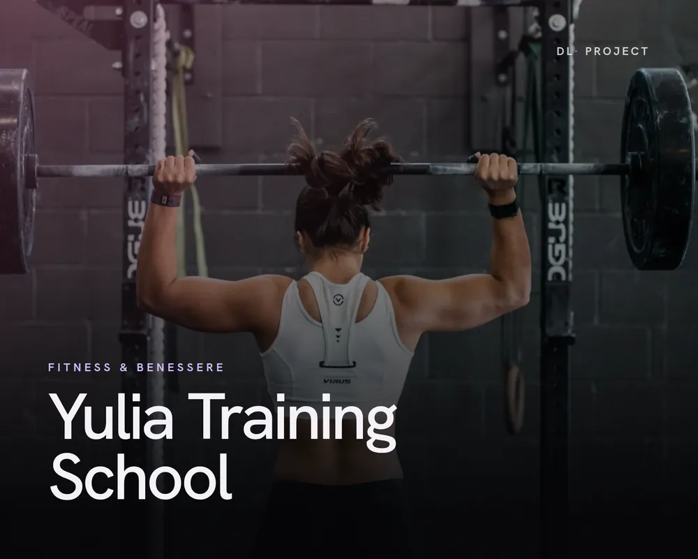
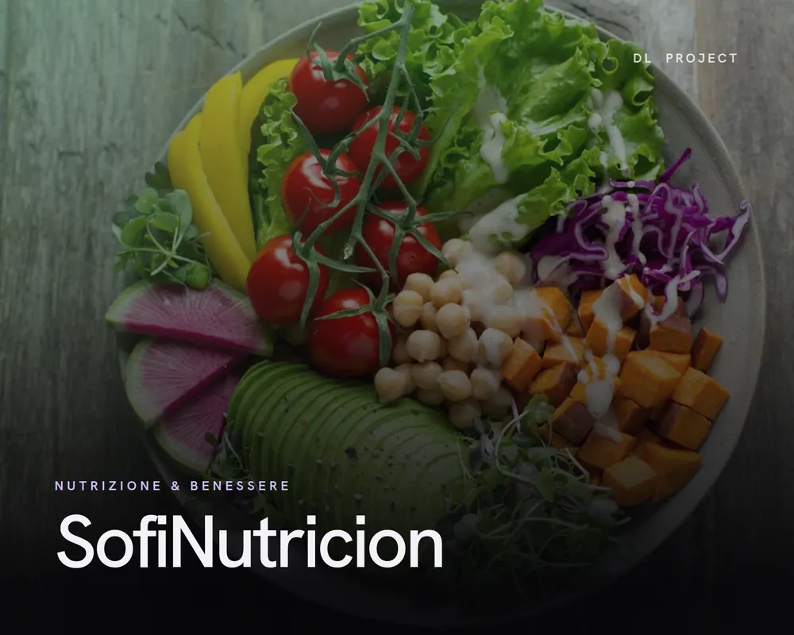
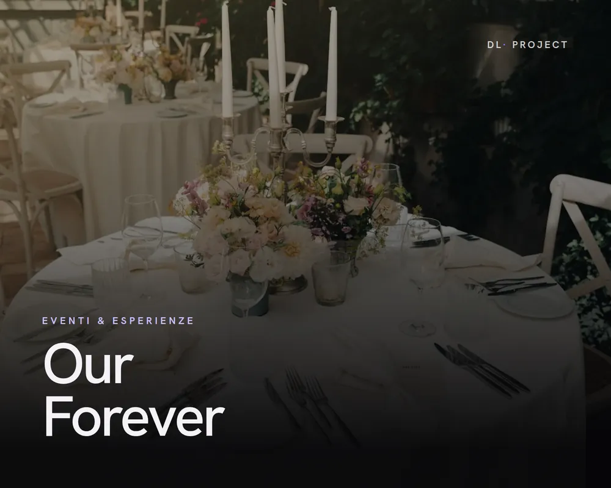
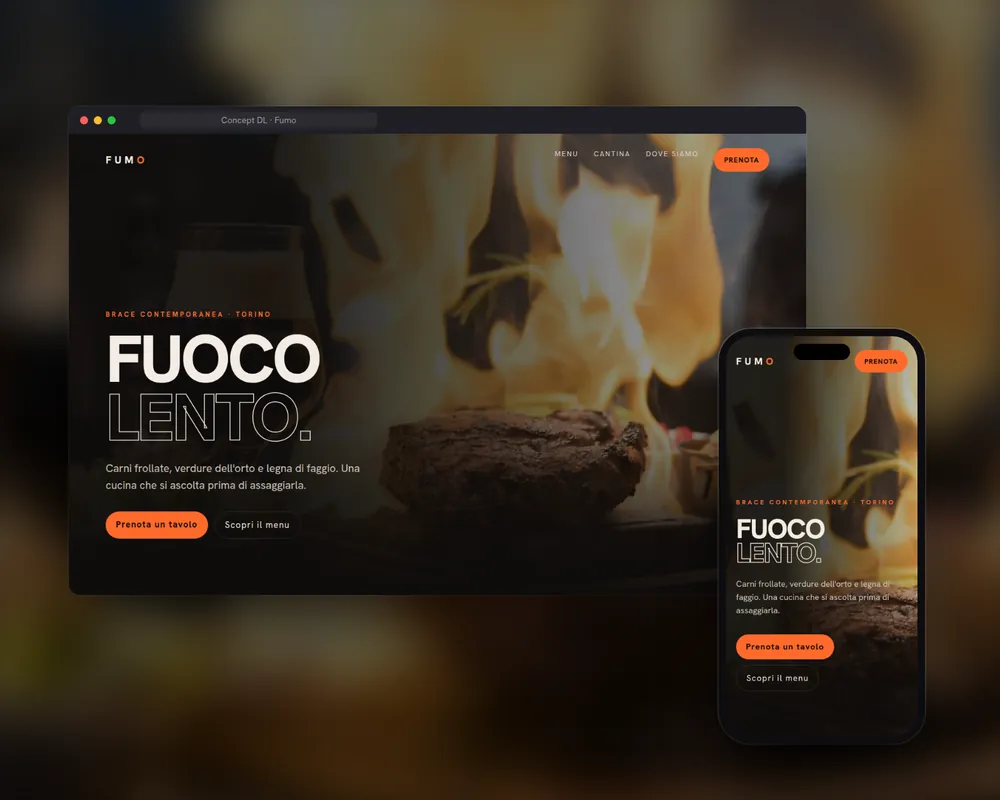
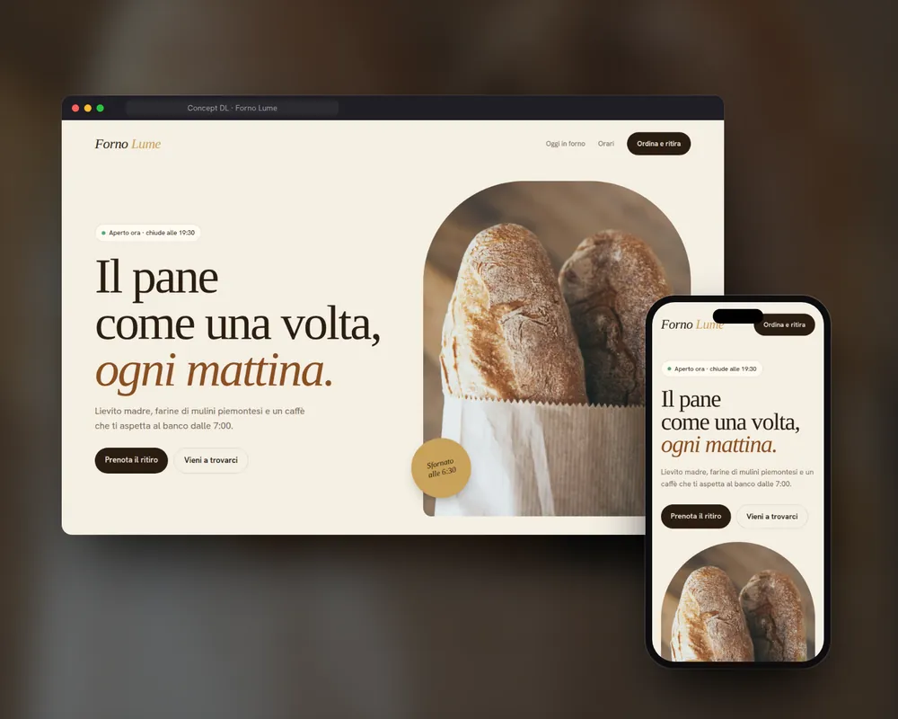
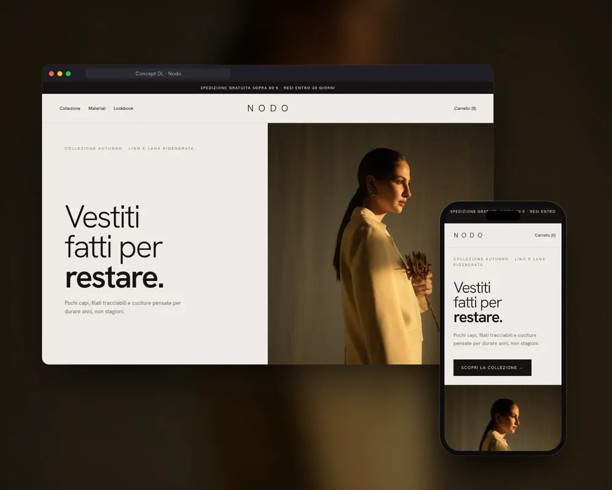
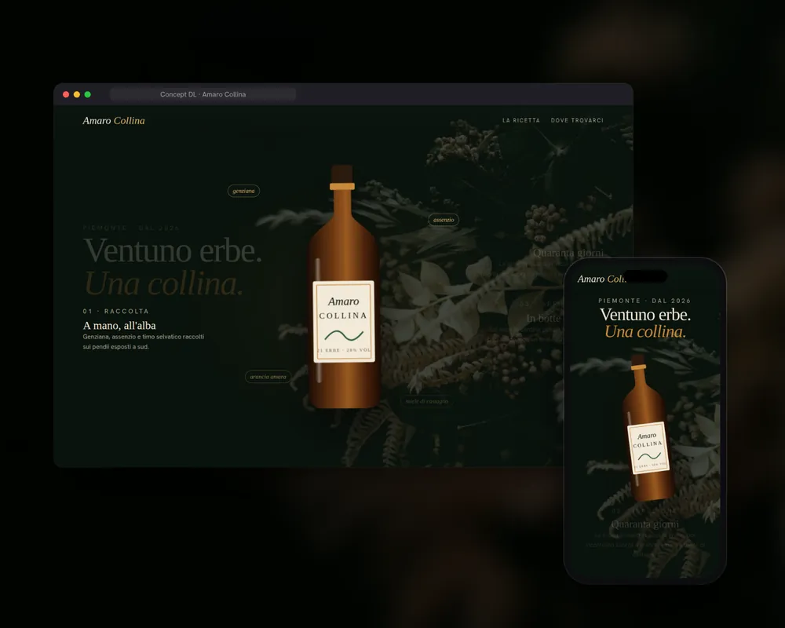

Portfolio
CNC Experience
Industria & Tecnologia
La precisione dell’officina tradotta in un’esperienza digitale.

1995 / The old web
THE WEB WAS
BUILT TO BE
VISITED.
Ogni nuova esperienza comincia da un cambiamento.
02 / The transformation
WE THINK IT
SHOULD BE
EXPERIENCED.
Lasciamo il vecchio web alle spalle.
03 / A new digital era
WE BUILD
DIGITAL
EXPERIENCES.
DL Consulting — Strategia, design e tecnologia.
04 / What we create
WEB DESIGN.
UX / UI.
Esperienze costruite intorno al tuo brand.
04 / What we create
CINEMATIC MOTION.
3D EXPERIENCES.
Lo scroll diventa storytelling.
04 / What we create
AI CONTENT.
PERFORMANCE.
Contenuti e tecnologia, orientati alla conversione.
05 / From idea to experience
IDEA.
Partiamo dall’obiettivo.
05 / From idea to experience
STRATEGY.
Costruiamo il percorso.
05 / From idea to experience
DESIGN.
Diamo forma all’esperienza.
05 / From idea to experience
DEVELOPMENT.
La rendiamo reale.
05 / From idea to experience
EXPERIENCE.
Ogni elemento lavora insieme.
07 / Choose your experience
ESSENTIAL.
Una presenza digitale professionale. Da 690 €.
07 / Choose your experience
ADVANCED.
Il sito diventa uno strumento commerciale. Da 1.290 €.
07 / Choose your experience
SIGNATURE.
Un’esperienza digitale da ricordare. Da 2.490 €.
08 / The result
FAST.
Progettato per la velocità.
08 / The result
INTUITIVE.
Ogni interazione ha una direzione.
08 / The result
MEMORABLE.
Un’identità che lascia il segno.
08 / The result
BUILT TO
CONVERT.
Dall’attenzione, a nuove opportunità.
09 / Your next chapter
YOUR BRAND
COULD BE
NEXT.
Let’s build something different.
Parliamo del tuo progettoSiti web e consulenza digitale · Torino
Dal primo messaggio al sito online: siti, contenuti ed esperienze digitali costruiti intorno alla tua attività, in ogni formato che serve.
Pensati per convertire: struttura, messaggio e design lavorano per un obiettivo preciso.
Reel, caroselli e creatività coerenti con il sito e riconoscibili in ogni canale.
Movimento, 3D e scroll storytelling quando servono a farsi ricordare.
Come funziona
Un percorso chiaro, dal primo messaggio al sito online. Nessun gergo tecnico, nessuna sorpresa.
Scrivi cosa vuoi cambiare, con parole semplici: più contatti, un’immagine più autorevole, un sito che finalmente funzioni. Partiamo da obiettivi e pubblico, non da un template.
Vedi il prototipo prima dello sviluppo. Struttura, testi, colori e interazioni si decidono insieme, finché ogni elemento ha un perché.
Online su ogni dispositivo, con performance, SEO tecnica di base e punti di contatto collegati. Poi il progetto continua a crescere.
La differenza
Un sito vetrina è dove il lavoro comincia. Un progetto DL è dove inizia a lavorare per la tua attività.

Online, ma ferma.

Livelli6
Tutto collegato
Chiaro, misurabile, pronto a crescere.
Per chi lavoriamo
Aziende, professionisti e attività locali hanno bisogni diversi. Il punto di partenza è sempre lo stesso: capire prima di costruire.

Nasciamo dal mondo meccanico e CNC: sappiamo cosa significa lavorare al centesimo. Per aziende artigiane e industriali costruiamo siti che spiegano competenze tecniche in modo chiaro e credibile.

Consulenti, trainer, studi e freelance: un sito personale che racconta metodo e competenze, e porta le persone giuste al primo contatto.

Negozi, ristoranti e attività di quartiere: informazioni essenziali, immagini che fanno venire voglia di entrare e un percorso rapido verso chiamata, prenotazione o visita.
Competenze
Trasformare la presenza digitale in qualcosa di utile alla tua attività: siti, comunicazione e ottimizzazione lavorano insieme.
Web experience
Un obiettivo chiaro, una struttura intuitiva e un’identità riconoscibile. Ogni pagina accompagna le persone verso l’azione giusta.
Esplora il servizioDigital presence
Sito, contenuti e canali devono raccontare la stessa attività. Partiamo da come vieni percepito oggi, per costruire una direzione più chiara.
Esplora il servizioAnalysis & optimization
A volte serve far funzionare davvero quello che hai. Individuiamo gli attriti che rendono più difficile capire, navigare e agire.
Esplora il servizioProgetti
Contesti diversi, la stessa attenzione al dettaglio. Progetti online, in sviluppo e concept dimostrativi: lo indichiamo sempre su ogni card.

(si apre in una nuova scheda)







Il nostro impegno
Niente promesse vaghe: ecco come lavoro, su ogni progetto.
Parli sempre con me: chi ascolta il progetto è la stessa persona che lo progetta e lo costruisce.
Il prototipo arriva prima dello sviluppo. Struttura, testi e stile si decidono insieme, prima di scrivere codice.
Prezzi di partenza pubblici e un preventivo su misura: sai cosa è incluso prima di iniziare.
Con DL Care il sito resta aggiornato, sicuro e continua a migliorare. Senza vincoli: scegli tu se e come continuare.
Il metodo
Sei fasi, un solo interlocutore. Sai sempre a che punto siamo e cosa succede dopo.
Analisi
Ascoltiamo la tua attività, il pubblico e gli obiettivi. Individuiamo problemi prioritari e opportunità concrete.
Strategia
Definiamo target, posizionamento, messaggio e architettura dei contenuti. Costruiamo il percorso verso il contatto.
Prototipo
Struttura, direzione visiva e interazioni prendono forma in una prima esperienza concreta.
Sviluppo
Interfaccia, contenuti e movimento lavorano insieme, con attenzione a responsive, performance e accessibilità.
Lancio
Controlliamo qualità, collegamenti e punti di conversione. Prepariamo la pubblicazione e gli strumenti di misurazione previsti.
Evoluzione
Osserviamo, miglioriamo e sviluppiamo nuove possibilità. Il progetto cresce insieme alla tua attività.
Il fondatore · Lorenzo Delbosco
Il mio percorso parte dal settore meccanico e CNC. Un mondo in cui ogni dettaglio, misura e scelta ha una funzione precisa.
Ho portato lo stesso modo di ragionare nel digitale: siti web, comunicazione e intelligenza artificiale. DL Consulting nasce per dare alle idee una direzione e alle attività una presenza all’altezza del loro valore.
Prezzi
Prezzi di partenza chiari, nessun abbonamento obbligatorio. Dopo il lancio scegli tu se e come continuare con DL Care.
Una presenza digitale professionale.
Per professionisti, attività locali e piccole aziende.
da690€
ParliamoneIl tuo sito, uno strumento commerciale.
Per aziende che vogliono comunicare meglio e generare opportunità.
da1.290€
ParliamoneUn’esperienza che si fa ricordare.
Per brand che vogliono distinguersi con un progetto completamente su misura.
da2.490€
ParliamonePer tenere il sito sicuro e in forma.
99€ / mese
ParliamonePer far crescere il progetto, mese dopo mese.
249€ / mese
ParliamoneUn affiancamento digitale continuativo.
da 449€ / mese
ParliamoneOgni progetto viene valutato individualmente in base a obiettivi, complessità, contenuti e funzionalità. Configuratori, PWA, aree riservate, e-commerce avanzati e funzioni particolarmente complesse sono valutati separatamente.
Confronta tutte le caratteristicheFAQ
Non trovi quella giusta? Scrivimi: rispondo personalmente.
No. Analizziamo il progetto esistente: a volte intervenire su struttura, UX, contenuti e performance è la scelta più utile.
Partiamo da obiettivi, complessità e funzionalità. Puoi confrontare le soluzioni oppure scegliere “Guidami tu” nel brief: definiamo insieme il livello adatto.
Sono prezzi di partenza. Ogni progetto viene valutato individualmente in base a obiettivi, complessità, contenuti e funzionalità.
DL Care offre tre livelli di supporto: Care, Growth e Partner. Le attività incluse sono descritte nelle rispettive offerte.
Sì. Scegliamo questi strumenti quando aiutano il progetto. Signature comprende esperienze 3D e contenuti/video AI; le funzioni particolarmente complesse vengono valutate separatamente.
Sì. La presenza digitale comprende identità, messaggio e contenuti come Reel e caroselli. Advanced include una revisione Instagram, Partner un supporto continuativo.
Con un brief di pochi minuti o un messaggio su WhatsApp. Raccontami cosa vuoi cambiare: ti rispondo personalmente e troviamo insieme il primo passo.
Il prossimo passo
Raccontami cosa vuoi cambiare. Troviamo insieme il primo passo.
Oppure scrivi a dl.consulting.torino@gmail.com